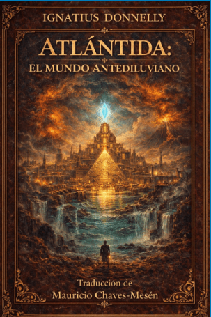

Editor y Traductor
Durante muchos años, Mauricio Chaves-Mesén ha trabajado de forma obsesiva en la edición de cientos de libros clásicos en inglés, la sistematización de las novelas de Julio Verne en varios idiomas y la traducción de más de cien libros al español. Entre ellos se encuentran obras fundamentales del Nuevo Pensamiento y el esoterismo, así como novelas de importancia histórica como 1984, El Principito y La raza que vendrá, además de la serie de Arsène Lupin para Editorial Planeta.


